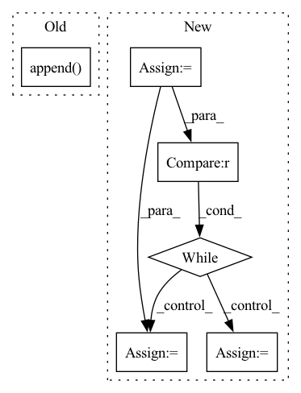

Pattern ID :32024
Before Change
e_4 = model(x_4.to("cuda"), t_list[2].to("cuda")).to("cpu")
residual = (1 / 6) * (residual + 2 * e_2 + 2 * e_3 + e_4)
else:
ets.append( residual)
residual = (1 / 24) * (55 * ets[-1] - 59 * ets[-2] + 37 * ets[-3] - 9 * ets[-4])
img_next = self.noise_scheduler.transfer(image.to("cpu"), t, t_next, residual)
After Change
ets = []
prev_noises = []
step_idx = len(seq) - 1
while step_idx >= 0 :
i = seq[step_idx]
j = seq_next[step_idx]
t = (torch.ones(image.shape[0]) * i)
t_next = (torch.ones(image.shape[0]) * j)
residual = model(image.to("cuda"), t.to("cuda"))
residual = residual.to("cpu")
t_list = [t, (t+t_next)/2, t_next]
ets.append(residual)
if len(ets) <= 3:
image = image.to("cpu")
x_2 = self.noise_scheduler.transfer(image.to("cpu"), t_list[0], t_list[1], residual)
e_2 = model(x_2.to("cuda"), t_list[1].to("cuda")).to("cpu")
x_3 = self.noise_scheduler.transfer(image, t_list[0], t_list[1], e_2)
e_3 = model(x_3.to("cuda"), t_list[1].to("cuda")).to("cpu")
x_4 = self.noise_scheduler.transfer(image, t_list[0], t_list[2], e_3)
e_4 = model(x_4.to("cuda"), t_list[2].to("cuda")).to("cpu")
residual = (1 / 6) * (residual + 2 * e_2 + 2 * e_3 + e_4)
else:
residual = (1 / 24) * (55 * ets[-1] - 59 * ets[-2] + 37 * ets[-3] - 9 * ets[-4])
img_next = self.noise_scheduler.transfer(image.to("cpu"), t, t_next, residual)
image = img_next
step_idx = step_idx - 1
// if len(prev_noises) in [1, 2]:
// t = (t + t_next) / 2In pattern: SUPERPATTERN
Frequency: 3
Non-data size: 6
Instances Fragment ID: 93772214
Project Name: huggingface/diffusers
Commit Name: 059a6e9d82337a2c7fbb520404f3b9895bc4159f
Time: 2022-06-13
Author: patrick.v.platen@gmail.com
File Name: src/diffusers/pipelines/pipeline_pndm.py
M Class Name: PNDM
N Class Name: PNDM
M Method Name: __call__(5)
N Method Name: __call__(5)
M Parent Class: DiffusionPipeline
N Parent Class: DiffusionPipeline
M File Name: src/diffusers/pipelines/pipeline_pndm.py
N File Name: src/diffusers/pipelines/pipeline_pndm.py
M Start Line: 36
M End Line: 83
N Start Line: 36
N End Line: 107
Before Change
continue
texts.append(clean_text)
entities_list.append( entities)
docs = nlp.pipe(texts, batch_size=50)
for doc, entities in zip(docs, entities_list):After Change
with entity_file_path.open("r", encoding="utf8") as _file:
line = _file.readline()
i = 0
while line and i < max_index :
if i in line_ids:
example = json.loads(line)
article_id = example["article_id"]
clean_text = example["clean_text"]
entities = example["entities"]
if dev != is_dev(article_id) or not is_valid_article(clean_text):
continue
doc = nlp(clean_text)
gold = _get_gold_parse(doc, entities, dev=dev, kb=kb, labels_discard=labels_discard)
if gold and len(gold.links) > 0:
yield doc, gold
i += 1
line = _file.readline()
Fragment ID: 93772178
Project Name: explosion/spaCy
Commit Name: 9cf965c26056065d6476b2a4336a42423bef3600
Time: 2020-04-02
Author: svlandeg@users.noreply.github.com
File Name: bin/wiki_entity_linking/wikipedia_processor.py
M Class Name: AnonimousClass
N Class Name: AnonimousClass
M Method Name: read_el_docs_golds(6)
N Method Name: read_el_docs_golds(6)
M Parent Class:
N Parent Class:
M File Name: bin/wiki_entity_linking/wikipedia_processor.py
N File Name: bin/wiki_entity_linking/wikipedia_processor.py
M Start Line: 482
M End Line: 506
N Start Line: 482
N End Line: 504
Before Change
if resl == list(resl2ch.keys())[1]:
break
layers.append( MiniBatchStd())
layers += [
EqualizedConv2d(resl2ch[4]+1, resl2ch[4], 3, padding=1, bias=False),
FusedLeakyReLU(resl2ch[4]),
Flatten(),After Change
Conv2d("elr", image_channels, ochannels, 1),
nn.LeakyReLU(0.2, inplace=True)
)
resl = image_size
blocks = []
while resl > 4 :
resl = resl // 2
channels *= 2
ichannels, ochannels = ochannels, check_c(channels)
blocks.append(
DBlock(ichannels, ochannels, block_num_conv) Fragment ID: 93772249
Project Name: stomoya/animeface
Commit Name: b3652bae109c713da926d5532eb014b02135da52
Time: 2020-12-14
Author: blackie0110@gmail.com
File Name: implementations/StyleGAN2/model.py
M Class Name: Discriminator
N Class Name: Discriminator
M Method Name: __init__(7)
N Method Name: __init__(1)
M Parent Class: nn.Module
N Parent Class: nn.Module
M File Name: implementations/StyleGAN2/model.py
N File Name: implementations/StyleGAN2/model.py
M Start Line: 354
M End Line: 387
N Start Line: 364
N End Line: 389